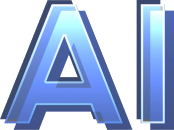

2025 APEC CEO SUMMIT,
Future Tech Forum Series: 
2025. 10. 28 14:00 - 16:00
경주엑스포공원 문무홀
주관사 SK텔레콤, SK하이닉스
Future Tech Forum AI 세션은 APEC CEO Summit과 함께 열리는 특별 프로그램으로, 글로벌 AI 산업 리더, AI 석학, 그리고 정부 고위 관료들이 모여 최신 AI 기술과 트렌드, 주요 현안에 대해 심도 깊은 논의를 나눕니다.
본 세션은 공공과 민간을 아우르는 글로벌 AI 정책과 산업에 대한
네트워킹 장으로서 참가자 여러분께 세계 AI 담론의 현장을 직접
경험하고 교류할 수 있는 기회를 제공합니다.
APEC CEO Summit Korea 2025의 특별 프로그램인
Future Tech Forum - AI에 여러분을 모시게 되어 매우 기쁘게
생각합니다.
이번 포럼은 대한민국 AI 생태계 구축을 주제로,
글로벌 빅테크 기업, 세계적인 석학, 그리고 정부 인사들이 함께 모여
AI의 미래를 논의하는 장이 될 것입니다.
다양한 통찰과 비전을 공유함으로써,
한국의 혁신이 글로벌 협력과 연결되고,
더 넓은 기회로 확장될 수 있기를 기대합니다.
AI가 산업을 혁신하고, 사회에 새로운 가치를 창출하며,
아시아·태평양 지역의 지속 가능한 성장에 기여할 수 있는 길을
함께 모색하고자 합니다.
여러분의 적극적인 참여를 통해 이번 AI 담론이
더욱 의미 있는 성과로 이어지기를 바랍니다.